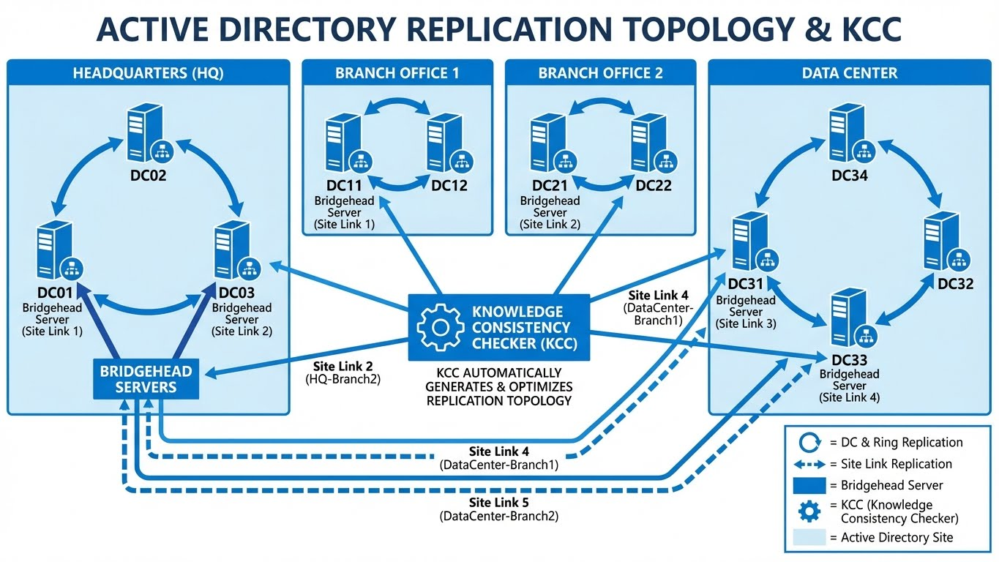

Active Directory PowerShell
Administration Active Directory via PowerShell.

Prérequis
# Importer le module AD
Import-Module ActiveDirectory
# Vérifier la connexion au domaine
Get-ADDomain
# Si RSAT non installé (Windows 10/11)
Add-WindowsCapability -Online -Name Rsat.ActiveDirectory.DS-LDS.Tools~~~~0.0.1.0
Gestion des Utilisateurs (CRUD)
Créer un Utilisateur
# Création basique
New-ADUser -Name "Jean Dupont" -SamAccountName "jdupont" -Enabled $true
# Création complète et sécurisée
$password = Read-Host -AsSecureString "Enter password"
New-ADUser `
-Name "Jean Dupont" `
-GivenName "Jean" `
-Surname "Dupont" `
-SamAccountName "jdupont" `
-UserPrincipalName "jdupont@corp.local" `
-Path "OU=Users,OU=Paris,DC=corp,DC=local" `
-AccountPassword $password `
-Enabled $true `
-ChangePasswordAtLogon $true `
-Department "IT" `
-Title "SysAdmin"
# Création en masse depuis CSV
Import-Csv users.csv | ForEach-Object {
New-ADUser `
-Name "$($_.Prenom) $($_.Nom)" `
-SamAccountName $_.Login `
-UserPrincipalName "$($_.Login)@corp.local" `
-Path "OU=Users,DC=corp,DC=local" `
-AccountPassword (ConvertTo-SecureString $_.Password -AsPlainText -Force) `
-Enabled $true
}
Modifier un Utilisateur
# Modifier des attributs
Set-ADUser -Identity jdupont -Department "Security" -Title "Security Engineer"
# Modifier plusieurs attributs
Set-ADUser -Identity jdupont -Replace @{
telephoneNumber = "+33 1 23 45 67 89"
physicalDeliveryOfficeName = "Paris - Floor 3"
}
# Désactiver un compte
Disable-ADAccount -Identity jdupont
# Activer un compte
Enable-ADAccount -Identity jdupont
# Réinitialiser le mot de passe
Set-ADAccountPassword -Identity jdupont -Reset -NewPassword (Read-Host -AsSecureString "New password")
# Forcer le changement de mot de passe à la prochaine connexion
Set-ADUser -Identity jdupont -ChangePasswordAtLogon $true
Rechercher des Utilisateurs
# Tous les utilisateurs (ATTENTION : performance !)
Get-ADUser -Filter *
# Filtrer côté serveur (RECOMMANDÉ)
Get-ADUser -Filter 'Department -eq "IT"'
Get-ADUser -Filter 'Name -like "Jean*"'
Get-ADUser -Filter 'Enabled -eq $false'
# Avec propriétés supplémentaires
Get-ADUser -Identity jdupont -Properties *
Get-ADUser -Filter * -Properties Department, Title, LastLogonDate |
Select-Object Name, Department, Title, LastLogonDate
# Recherche dans une OU spécifique
Get-ADUser -Filter * -SearchBase "OU=Paris,DC=corp,DC=local"
# Utilisateurs créés cette semaine
$date = (Get-Date).AddDays(-7)
Get-ADUser -Filter 'Created -gt $date' -Properties Created |
Select-Object Name, Created
Performance : Filtrer côté serveur
Débloquer un Compte
# Débloquer
Unlock-ADAccount -Identity jdupont
# Vérifier si verrouillé
Get-ADUser -Identity jdupont -Properties LockedOut | Select-Object Name, LockedOut
# Trouver tous les comptes verrouillés
Search-ADAccount -LockedOut | Select-Object Name, SamAccountName
Gestion des Groupes
Créer et Gérer des Groupes
# Créer un groupe
New-ADGroup -Name "IT-Admins" -GroupScope Global -GroupCategory Security `
-Path "OU=Groups,DC=corp,DC=local"
# Types de groupes
# -GroupScope : DomainLocal, Global, Universal
# -GroupCategory : Security, Distribution
Ajouter / Retirer des Membres
# Ajouter un membre
Add-ADGroupMember -Identity "IT-Admins" -Members jdupont
# Ajouter plusieurs membres
Add-ADGroupMember -Identity "IT-Admins" -Members jdupont, mmartin, pdurand
# Retirer un membre
Remove-ADGroupMember -Identity "IT-Admins" -Members jdupont -Confirm:$false
Lister les Membres
# Membres directs
Get-ADGroupMember -Identity "IT-Admins"
# Membres récursifs (inclut les groupes imbriqués)
Get-ADGroupMember -Identity "IT-Admins" -Recursive |
Select-Object Name, SamAccountName, objectClass
# Compter les membres
(Get-ADGroupMember -Identity "IT-Admins" -Recursive).Count
Groupes d'un Utilisateur
# Groupes directs d'un utilisateur
Get-ADPrincipalGroupMembership -Identity jdupont |
Select-Object Name
# Avec le DN complet
Get-ADUser -Identity jdupont -Properties MemberOf |
Select-Object -ExpandProperty MemberOf
Audit & Sécurité AD
Comptes Inactifs (Stale Accounts)
# Comptes non connectés depuis 90 jours
$90days = (Get-Date).AddDays(-90)
Get-ADUser -Filter 'LastLogonDate -lt $90days' -Properties LastLogonDate |
Select-Object Name, SamAccountName, LastLogonDate, Enabled |
Sort-Object LastLogonDate
# Utiliser Search-ADAccount (plus précis)
Search-ADAccount -AccountInactive -TimeSpan 90.00:00:00 -UsersOnly |
Select-Object Name, SamAccountName, LastLogonDate
# Comptes jamais connectés
Search-ADAccount -AccountInactive -UsersOnly |
Where-Object { $_.LastLogonDate -eq $null } |
Select-Object Name, SamAccountName, Created
Mots de Passe Expirés / Problèmes
# Comptes avec mot de passe expiré
Search-ADAccount -PasswordExpired |
Select-Object Name, SamAccountName, PasswordExpired
# Comptes avec mot de passe qui n'expire jamais (RISQUE)
Get-ADUser -Filter 'PasswordNeverExpires -eq $true' -Properties PasswordNeverExpires |
Select-Object Name, SamAccountName
# Comptes sans mot de passe requis (CRITIQUE)
Get-ADUser -Filter 'PasswordNotRequired -eq $true' -Properties PasswordNotRequired |
Select-Object Name, SamAccountName
Audit des Privilèges (Domain Admins)
# Membres du groupe Domain Admins
Get-ADGroupMember -Identity "Domain Admins" -Recursive |
Select-Object Name, SamAccountName, objectClass
# Membres du groupe Enterprise Admins
Get-ADGroupMember -Identity "Enterprise Admins" -Recursive |
Select-Object Name, SamAccountName
# Membres du groupe Administrators
Get-ADGroupMember -Identity "Administrators" -Recursive |
Select-Object Name, SamAccountName
# Audit complet des groupes privilégiés
$privilegedGroups = @("Domain Admins", "Enterprise Admins", "Schema Admins", "Administrators")
foreach ($group in $privilegedGroups) {
Write-Host "=== $group ===" -ForegroundColor Yellow
Get-ADGroupMember -Identity $group -Recursive |
Select-Object Name, SamAccountName
}
Rapport d'Audit Complet
# Export des comptes à risque
$report = @()
# Comptes inactifs
$report += Search-ADAccount -AccountInactive -TimeSpan 90.00:00:00 -UsersOnly |
Select-Object Name, SamAccountName, @{N='Issue';E={'Inactive 90+ days'}}
# Mots de passe expirés
$report += Search-ADAccount -PasswordExpired |
Select-Object Name, SamAccountName, @{N='Issue';E={'Password Expired'}}
# Password Never Expires
$report += Get-ADUser -Filter 'PasswordNeverExpires -eq $true' |
Select-Object Name, SamAccountName, @{N='Issue';E={'Password Never Expires'}}
# Export CSV
$report | Export-Csv -Path "AD_Audit_Report.csv" -NoTypeInformation
FSMO & Santé Domaine
Rôles FSMO
# Voir tous les rôles FSMO du domaine
Get-ADDomain | Select-Object InfrastructureMaster, RIDMaster, PDCEmulator
# Voir les rôles FSMO de la forêt
Get-ADForest | Select-Object DomainNamingMaster, SchemaMaster
# Commande complète
netdom query fsmo
| Rôle | Portée | Description |
|---|---|---|
| Schema Master | Forêt | Modifications du schéma AD |
| Domain Naming Master | Forêt | Ajout/suppression de domaines |
| RID Master | Domaine | Attribution des RID (SID) |
| PDC Emulator | Domaine | Auth, GPO, temps |
| Infrastructure Master | Domaine | Références inter-domaines |
Vérifier la Réplication
# État de la réplication
Get-ADReplicationPartnerMetadata -Target "dc01.corp.local" |
Select-Object Partner, LastReplicationSuccess, LastReplicationResult
# Tous les DCs
Get-ADDomainController -Filter * |
ForEach-Object {
Get-ADReplicationPartnerMetadata -Target $_.HostName
} | Select-Object Server, Partner, LastReplicationSuccess
# Échecs de réplication
Get-ADReplicationFailure -Target "dc01.corp.local"
# Outil classique (CMD)
repadmin /replsummary
repadmin /showrepl
Santé des Domain Controllers
# Lister les DCs
Get-ADDomainController -Filter * |
Select-Object Name, IPv4Address, Site, IsGlobalCatalog, OperatingSystem
# Vérifier les services AD
Get-Service -ComputerName dc01 -Name NTDS, DNS, Netlogon, W32Time |
Select-Object Name, Status
# Test de connectivité DC
Test-ComputerSecureChannel -Server dc01.corp.local
Architecture d'Entreprise Sécurisée (Tiering Model)
Concept : Séparation des Domaines Administration vs Utilisateurs
Modèle de séparation en deux domaines pour respecter le principe de moindre privilège :
┌─────────────────────────────────────────────────────────────┐
│ ARCHITECTURE CLASSIQUE (RISQUÉE) │
├─────────────────────────────────────────────────────────────┤
│ │
│ Un seul domaine : corp.internal │
│ │
│ ✗ Admins et utilisateurs dans le même domaine │
│ ✗ Un utilisateur compromis peut voir les admins │
│ ✗ Pass-the-Hash peut cibler les comptes admin │
│ ✗ GPO peuvent être modifiées par des comptes non-admin │
│ │
│ Risque : Élévation de privilèges triviale │
│ │
├─────────────────────────────────────────────────────────────┤
│ ARCHITECTURE SÉCURISÉE (TIERING) │
├─────────────────────────────────────────────────────────────┤
│ │
│ Deux domaines séparés : │
│ │
│ 1. admin.corp.internal (Domaine d'Administration) │
│ - Comptes privilégiés uniquement │
│ - PAW (Privileged Access Workstation) uniquement │
│ - Isolation réseau stricte (VLAN dédié) │
│ │
│ 2. users.corp.internal (Domaine Utilisateurs) │
│ - Comptes utilisateurs standards │
│ - Postes de travail standards │
│ - Serveurs d'application │
│ │
│ Trust Unidirectionnel : admin → users │
│ (Admin peut gérer User, User ne voit pas Admin) │
│ │
└─────────────────────────────────────────────────────────────┘
Bénéfices : - ✅ Isolation des privilèges : Un compte utilisateur compromis ne peut pas voir les comptes admin - ✅ Limitation du Pass-the-Hash : Les hash des comptes admin ne sont pas présents sur les postes utilisateurs - ✅ Segmentation réseau : VLAN séparés pour admin et users - ✅ Conformité SecNumCloud : Séparation des environnements d'administration
Trust Unidirectionnel (Admin Trust User)
Configuration du Trust :
# Sur le domaine ADMIN (admin.corp.internal)
# Créer le trust unidirectionnel
# admin.corp.internal fait confiance à users.corp.internal (incoming trust)
# users.corp.internal NE fait PAS confiance à admin.corp.internal
# Créer le trust (exécuté depuis admin.corp.internal)
New-ADTrust -Name users.corp.internal `
-Type Forest `
-Direction OneWay `
-RemoteDomainName users.corp.internal `
-TrustPassword (Read-Host -AsSecureString "Enter trust password")
# Vérifier le trust
Get-ADTrust -Filter * | Select-Object Name, Direction, TrustType
# Output attendu :
# Name Direction TrustType
# ---- --------- ---------
# users.corp.internal OneWay Forest
Commandes netdom (alternative) :
REM Sur le domaine ADMIN (srv-dc-admin-01.admin.corp.internal)
REM Créer le trust unidirectionnel
netdom trust admin.corp.internal /domain:users.corp.internal /add /oneway:trustING
REM Explication :
REM - admin.corp.internal = Domaine qui REÇOIT la confiance (trusting domain)
REM - users.corp.internal = Domaine qui ACCORDE la confiance (trusted domain)
REM - /oneway:trustING = admin fait confiance à users (unidirectionnel)
REM Vérifier le trust
netdom trust admin.corp.internal /domain:users.corp.internal /verify
REM Output attendu :
REM The trust relationship between admin.corp.internal and users.corp.internal was successfully verified.
Tester le Trust :
# Depuis admin.corp.internal, rechercher un utilisateur de users.corp.internal
Get-ADUser -Identity "jdupont" -Server "users.corp.internal"
# Ajouter un utilisateur de users.corp.internal à un groupe de admin.corp.internal
Add-ADGroupMember -Identity "MyCorp-Admins" `
-Members "USERS\jdupont" `
-Server "admin.corp.internal"
# ✓ Fonctionne : admin peut gérer users
# ========================================
# Depuis users.corp.internal, rechercher un utilisateur de admin.corp.internal
Get-ADUser -Identity "admin_jdupont" -Server "admin.corp.internal"
# ✗ ÉCHOUE : users ne peut PAS voir admin (trust unidirectionnel)
# Output : Get-ADUser : Cannot find an object with identity: 'admin_jdupont'
Matrice de Confiance :
| Action | admin.corp.internal → users.corp.internal | users.corp.internal → admin.corp.internal |
|---|---|---|
| Voir les utilisateurs | ✅ Oui | ❌ Non (trust unidirectionnel) |
| Authentifier les utilisateurs | ✅ Oui | ❌ Non |
| Appliquer des GPO | ✅ Oui (cross-domain) | ❌ Non |
| Déléguer des permissions | ✅ Oui | ❌ Non |
Flux Réseau Requis pour Active Directory
Matrix des Flux (Anonymisée) :
| Source | Destination | Port | Protocole | Service | Description |
|---|---|---|---|---|---|
| Client | DC | 53 | TCP/UDP | DNS | Résolution de noms |
| Client | DC | 88 | TCP/UDP | Kerberos | Authentification |
| Client | DC | 135 | TCP | RPC Endpoint Mapper | Communication RPC |
| Client | DC | 137 | UDP | NetBIOS Name Service | Résolution NetBIOS (legacy) |
| Client | DC | 138 | UDP | NetBIOS Datagram | Communication NetBIOS (legacy) |
| Client | DC | 139 | TCP | NetBIOS Session | Session NetBIOS (legacy) |
| Client | DC | 389 | TCP/UDP | LDAP | Requêtes AD |
| Client | DC | 445 | TCP | SMB/CIFS | Partages réseau, SYSVOL, NETLOGON |
| Client | DC | 636 | TCP | LDAPS | LDAP sécurisé (SSL/TLS) |
| Client | DC | 3268 | TCP | Global Catalog | Recherche AD inter-domaines |
| Client | DC | 3269 | TCP | Global Catalog SSL | GC sécurisé (SSL/TLS) |
| Client | DC | 49152-65535 | TCP | RPC Dynamic | Ports éphémères RPC |
| DC | DC | 53 | TCP/UDP | DNS | Réplication zones DNS |
| DC | DC | 135 | TCP | RPC | Réplication AD |
| DC | DC | 389 | TCP | LDAP | Réplication AD |
| DC | DC | 445 | TCP | SMB | Réplication SYSVOL (DFS-R) |
| DC | DC | 3268 | TCP | Global Catalog | Réplication GC |
Flux Simplifiés (Production) :
┌─────────────────────────────────────────────────────────────┐
│ VLAN ADMIN (10.10.1.0/24) │
├─────────────────────────────────────────────────────────────┤
│ │
│ srv-dc-admin-01 (10.10.1.10) ←─────────┐ │
│ srv-dc-admin-02 (10.10.1.11) │ │
│ │ │
│ paw-admin-01 (10.10.1.100) ─────────────┘ │
│ │
│ Flux autorisés : │
│ - PAW → DC : 53, 88, 135, 389, 445, 636, 3268 │
│ - DC ↔ DC : 53, 135, 389, 445, 3268 (réplication) │
│ │
└─────────────────────────────────────────────────────────────┘
↓ Trust Unidirectionnel
↓ (admin → users)
┌─────────────────────────────────────────────────────────────┐
│ VLAN USERS (10.20.1.0/24) │
├─────────────────────────────────────────────────────────────┤
│ │
│ srv-dc-users-01 (10.20.1.10) │
│ srv-dc-users-02 (10.20.1.11) │
│ │
│ pc-user-01 (10.20.1.100) │
│ pc-user-02 (10.20.1.101) │
│ │
│ Flux autorisés : │
│ - PC → DC : 53, 88, 389, 445, 636 │
│ - DC ↔ DC : 53, 135, 389, 445, 3268 (réplication) │
│ - DC → DC Admin : 88, 389, 636, 3268 (trust) │
│ │
└─────────────────────────────────────────────────────────────┘
Règles Firewall (Windows Defender Firewall) :
# Sur les DCs du domaine ADMIN
# Autoriser les flux depuis les PAW uniquement (VLAN Admin)
New-NetFirewallRule -DisplayName "AD-LDAP-PAW" `
-Direction Inbound `
-Protocol TCP `
-LocalPort 389, 636, 3268, 3269 `
-RemoteAddress 10.10.1.0/24 `
-Action Allow
New-NetFirewallRule -DisplayName "AD-Kerberos-PAW" `
-Direction Inbound `
-Protocol TCP, UDP `
-LocalPort 88 `
-RemoteAddress 10.10.1.0/24 `
-Action Allow
New-NetFirewallRule -DisplayName "AD-DNS-PAW" `
-Direction Inbound `
-Protocol TCP, UDP `
-LocalPort 53 `
-RemoteAddress 10.10.1.0/24 `
-Action Allow
# Autoriser les flux de réplication entre DCs Admin
New-NetFirewallRule -DisplayName "AD-Replication-DCs" `
-Direction Inbound `
-Protocol TCP `
-LocalPort 135, 389, 445, 3268 `
-RemoteAddress 10.10.1.10, 10.10.1.11 `
-Action Allow
# Bloquer tout le reste
New-NetFirewallRule -DisplayName "AD-Block-Default" `
-Direction Inbound `
-Protocol Any `
-Action Block `
-Priority 1000
Ports Éphémères RPC (49152-65535)
Ne PAS ouvrir toute la plage 49152-65535 sur le firewall !
Solution : Fixer les ports RPC dynamiques à une plage restreinte (ex: 50000-50100).
# Fixer la plage RPC (sur les DCs)
netsh int ipv4 set dynamicport tcp start=50000 num=100
netsh int ipv4 set dynamicport udp start=50000 num=100
# Puis ouvrir uniquement 50000-50100 sur le firewall
New-NetFirewallRule -DisplayName "AD-RPC-Dynamic" `
-Direction Inbound `
-Protocol TCP `
-LocalPort 50000-50100 `
-RemoteAddress 10.10.1.0/24 `
-Action Allow
GPO Cross-Domain (Appliquer des GPO depuis Admin vers Users)
Scénario : Appliquer une GPO de sécurité depuis le domaine admin.corp.internal vers les utilisateurs de users.corp.internal.
Prérequis :
- Trust unidirectionnel configuré (admin → users)
- Permissions déléguées sur l'OU cible dans users.corp.internal
Étape 1 : Créer la GPO dans le domaine Admin
# Connexion au domaine ADMIN
$adminDomain = "admin.corp.internal"
# Créer la GPO dans le domaine Admin
New-GPO -Name "Security-Baseline-CrossDomain" -Domain $adminDomain
# Configurer la GPO (exemple : désactiver SMBv1)
Set-GPRegistryValue -Name "Security-Baseline-CrossDomain" `
-Domain $adminDomain `
-Key "HKLM\SYSTEM\CurrentControlSet\Services\LanmanServer\Parameters" `
-ValueName "SMB1" `
-Type DWord `
-Value 0
# Configurer l'audit des processus (Event ID 4688)
Set-GPRegistryValue -Name "Security-Baseline-CrossDomain" `
-Domain $adminDomain `
-Key "HKLM\SOFTWARE\Microsoft\Windows\CurrentVersion\Policies\System\Audit" `
-ValueName "ProcessCreationIncludeCmdLine_Enabled" `
-Type DWord `
-Value 1
Étape 2 : Lier la GPO à une OU du domaine Users
# Connexion au domaine USERS
$usersDomain = "users.corp.internal"
$targetOU = "OU=Workstations,DC=users,DC=corp,DC=internal"
# Lier la GPO (cross-domain)
New-GPLink -Name "Security-Baseline-CrossDomain" `
-Domain $adminDomain `
-Target $targetOU `
-LinkEnabled Yes `
-Enforced Yes
# Vérifier le lien
Get-GPInheritance -Target $targetOU | Select-Object -ExpandProperty GpoLinks
# Output attendu :
# DisplayName Enabled Enforced Order
# ----------- ------- -------- -----
# Security-Baseline-CrossDomain Yes Yes 1
Étape 3 : Déléguer les Permissions (si nécessaire)
Si la liaison échoue avec "Access Denied", déléguer les permissions sur l'OU cible :
# Sur le domaine USERS (srv-dc-users-01)
# Importer le module
Import-Module ActiveDirectory
# Déléguer "Apply Group Policy" au groupe admin du domaine Admin
$targetOU = "OU=Workstations,DC=users,DC=corp,DC=internal"
$adminGroup = "ADMIN\MyCorp-GPO-Admins"
# Obtenir l'ACL actuelle
$acl = Get-Acl -Path "AD:\$targetOU"
# Créer la règle ACE (Apply Group Policy)
$identity = New-Object System.Security.Principal.NTAccount($adminGroup)
$inheritanceType = [System.DirectoryServices.ActiveDirectorySecurityInheritance]::All
$accessRule = New-Object System.DirectoryServices.ActiveDirectoryAccessRule(
$identity,
[System.DirectoryServices.ActiveDirectoryRights]::GenericRead,
[System.Security.AccessControl.AccessControlType]::Allow,
$inheritanceType
)
# Appliquer la règle
$acl.AddAccessRule($accessRule)
Set-Acl -Path "AD:\$targetOU" -AclObject $acl
Étape 4 : Forcer l'Application de la GPO
# Sur un poste du domaine USERS (pc-user-01.users.corp.internal)
# Forcer la mise à jour GPO
gpupdate /force
# Vérifier les GPO appliquées
gpresult /r /scope:computer
# Output attendu :
# Applied Group Policy Objects
# -----------------------------
# Security-Baseline-CrossDomain
# Default Domain Policy
Vérification avec RSOP (Resultant Set of Policy) :
# Générer un rapport HTML des GPO appliquées
gpresult /h C:\Temp\gporesult.html
# Ouvrir le rapport et vérifier que "Security-Baseline-CrossDomain" apparaît
# dans la section "Computer Configuration"
Schéma de l'Architecture Cross-Domain GPO :
┌─────────────────────────────────────────────────────────────┐
│ DOMAINE ADMIN (admin.corp.internal) │
├─────────────────────────────────────────────────────────────┤
│ │
│ ┌─────────────────────────────────────────────┐ │
│ │ GPO: Security-Baseline-CrossDomain │ │
│ │ - Désactiver SMBv1 │ │
│ │ - Audit Process Creation (4688) │ │
│ │ - Forcer AES-256 Kerberos │ │
│ └─────────────────────────────────────────────┘ │
│ │ │
│ │ Link (GPO Link) │
│ ↓ │
└─────────────────────────┼────────────────────────────────────┘
│
│ Trust Unidirectionnel
│ (admin → users)
↓
┌─────────────────────────┼────────────────────────────────────┐
│ DOMAINE USERS (users.corp.internal) │
├─────────────────────────┼────────────────────────────────────┤
│ ↓ │
│ OU=Workstations ← GPO appliquée ici │
│ ├── pc-user-01 │
│ ├── pc-user-02 │
│ └── pc-user-03 │
│ │
│ Résultat : Les postes reçoivent la GPO du domaine Admin │
│ (politique de sécurité centralisée) │
│ │
└─────────────────────────────────────────────────────────────┘
Cas d'Usage Production :
| GPO | Domaine Source | Domaine Cible | Objectif |
|---|---|---|---|
| Security-Baseline | admin.corp.internal | users.corp.internal | Hardening (SMBv1, TLS, Audit) |
| Password-Policy | admin.corp.internal | users.corp.internal | Complexité mots de passe |
| Firewall-Rules | admin.corp.internal | users.corp.internal | Règles Windows Defender |
| Antivirus-Config | admin.corp.internal | users.corp.internal | Configuration Defender ATP |
Surveillance des GPO Cross-Domain :
# Lister toutes les GPO liées à une OU (incluant cross-domain)
Get-GPInheritance -Target "OU=Workstations,DC=users,DC=corp,DC=internal" |
Select-Object -ExpandProperty GpoLinks |
Select-Object DisplayName, Enabled, Enforced, @{N='Domain';E={
(Get-GPO -Name $_.DisplayName).DomainName
}}
# Output :
# DisplayName Enabled Enforced Domain
# ----------- ------- -------- ------
# Security-Baseline-CrossDomain True True admin.corp.internal
# Default Domain Policy True False users.corp.internal
Référence Rapide
# === MODULE ===
Import-Module ActiveDirectory
# === USERS ===
Get-ADUser -Identity jdupont -Properties *
Get-ADUser -Filter 'Department -eq "IT"'
New-ADUser -Name "User" -SamAccountName "user" -Enabled $true
Set-ADUser -Identity jdupont -Department "Security"
Unlock-ADAccount -Identity jdupont
# === GROUPS ===
Get-ADGroupMember -Identity "IT-Admins" -Recursive
Add-ADGroupMember -Identity "IT-Admins" -Members jdupont
Get-ADPrincipalGroupMembership -Identity jdupont
# === AUDIT ===
Search-ADAccount -AccountInactive -TimeSpan 90.00:00:00
Search-ADAccount -PasswordExpired
Search-ADAccount -LockedOut
Get-ADGroupMember -Identity "Domain Admins" -Recursive
# === FSMO & REPLICATION ===
Get-ADDomain | Select-Object PDCEmulator, RIDMaster, InfrastructureMaster
Get-ADReplicationPartnerMetadata -Target dc01
repadmin /replsummary